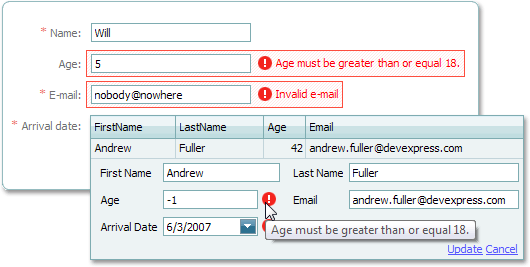

James Madison University, Spring 2014 Semester
Lab06B: Handling bad input values

Image source: DevExpress
Background
There are a number of conditions that may cause a program to fail. When we can anticipate such conditions, we use structures such as if statements to prevent those conditions from causing a run-time error or invalid results. In today's lab, we will use the Scanner methods hasNextInt and hasNextDouble to condition our reading of the input.
Objectives
Sign up for CodingBat and solve problems.
Use if-else statements to validate user input.
Key Terms
- runtime stack
- memory that keeps track of each method call and where to go after each method returns
- stack trace
- a list of method calls that were in the "runtime stack" at the point the program failed
- hasNext methods
- Scanner methods that return true if the next part of the input matches the expected data type
Part 1: Hello, CodingBat!
CodingBat is a free site of live problems to build skill in Java and/or Python. It was created by Nick Parlante, who is computer science lecturer at Stanford. The name "CodingBat" was based on the Greek word "bat" meaning "this domain was available" (or so they say).
-
Go to codingbat.com and create an account (click the link on the upper right).
Please use your JMU email when setting up your account. Also enter your name as shown (last, first). -
After logging in, click the "prefs" link (upper right) and "share to" mayfiecs@jmu.edu so you will get credit.
-
In Warmup-1 (on the Java side), do problems
sumDoubleandmakes10until you pass all of the test cases.
We will use CodingBat in subsequent labs, and you are encouraged to work on CodingBat problems at any time.
Part 2: Dividing by zero
Download the Lab06B.txt worksheet and open it with a text editor. Answer the questions below as you work through the lab. To get started, download Divide0.java and open it in DrJava.
-
Compile and run Divide0. Use the first operand of 10 and the second operand of 3. What is output?
-
Execute your program again, this time using 10 and 0 as operands. What error message do you see?
-
This error is an example of a run-time error. The message tells you what error you had and where it occurred.
-
To prevent this error, we can use an if-else structure to carry out the division only if the divisor is not 0. We can use a default value if we try to divide by zero.
-
In your program, create an if statement that will test the divisor for zero before carrying out the division operation. If the divisor is zero, print an error message:
If the divisor is not zero, carry out the division as is currently displayed. You should only condition the division operation, not the rest of the program.System.err.println("Cannot divide by zero"); -
Compile your program and use the values of 10 and 0. What error message do you see?
-
Why do you get this message?
-
Correct this condition using another if/else structure. Recompile your program and test with 10 and 0. What output do you get?
-
You have two if/else statements that should look similar. What is the conditional expression that you are using in both?
-
When you have two statements that are conditioned by the same expression, you can combine those if/else statements into one with a block of statements. Combine these two if/else conditions. Compile and execute your program. You need print only one error message for the divide by zero condition. Copy and paste your if/else structure into your worksheet.
Part 3: Bad input values
Download BadInput.java and open it in DrJava.
-
Compile and run BadInput. Use the correct type of values expected.
-
Now, run this program again and enter the value "x" when it asks for the integer value.
-
What error message do you see?
-
We can end the program "elegantly" rather than crashing as before. The Scanner method
hasNextIntreturns a boolean value. If the input stream does not contain an integer as the next token, the return value is false. If the input stream contains an integer as the next token, the return value is true. We can use this method to read a value only when it is of the correct type. -
Add an if/else statement around your first read statement. The condition should use the Scanner object's
hasNextIntmethod. If the condition is true, read the value using the normalnextIntmethod. If the condition is false, read the value using thenextmethod and print the error message "Bad value " followed by the value that was entered. -
Do the same thing for the second operand.
-
Why is it better to leave these as two separate if/else statements?
-
Compile your program. What error message do you see?
-
This error is caused because you set the value of the operands only in the case where there is a good value. There are two ways to handle a bad value. One is to simply skip all remaining statements and exit the program. Another is to use a default value.
-
We will set the operands using a constant in the Integer class. The Integer class has services that we can use with integer data. It also has a constant
Integer.MAX_VALUEwhich is the largest number that and integer variable can hold. In your code, set either operand with a bad value toInteger.MAX_VALUE. -
Compile and test your code using normal input as well as input with bad values (such as character data). Copy and paste one of your if/else structures into your worksheet.
Submit your completed Lab06B.txt file via Canvas by the end of the day.